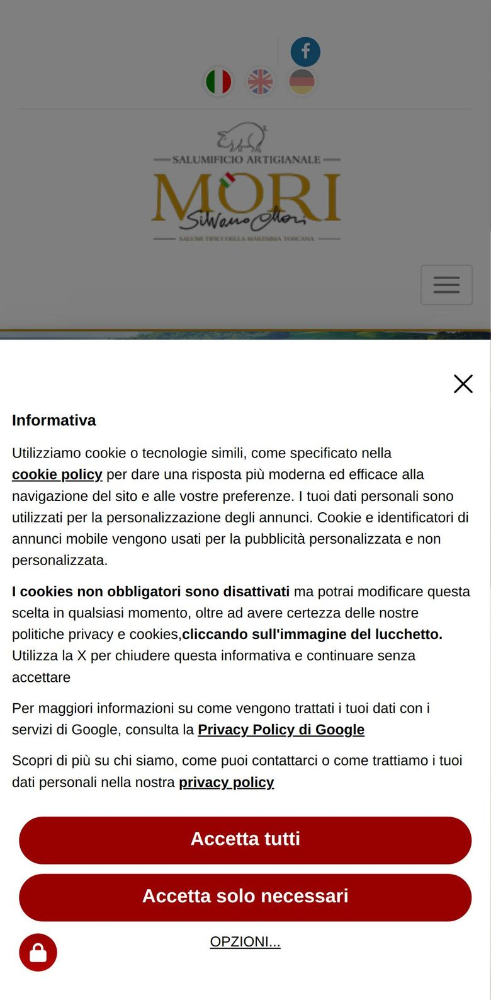
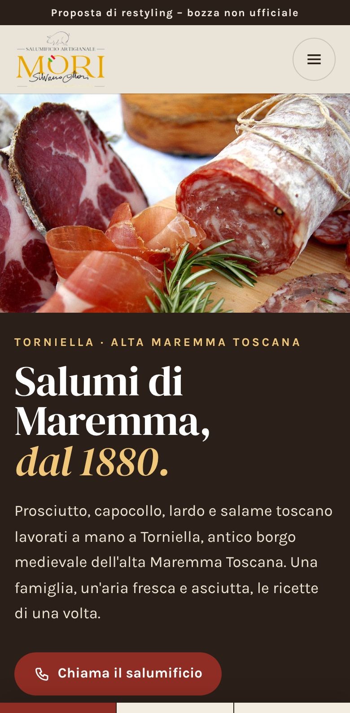
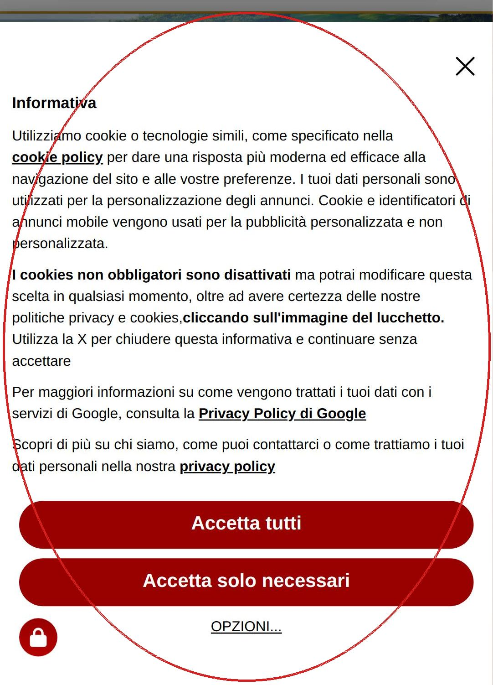
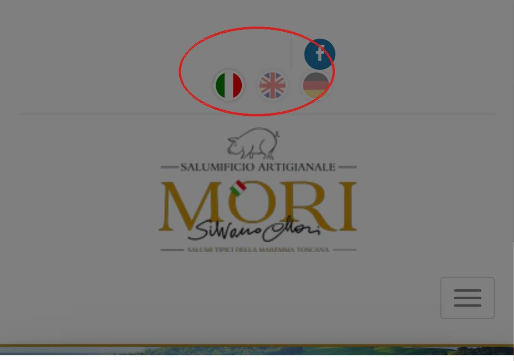

Salumificio Silvano Mori · Torniella (GR)
La prima schermata vista da un telefono, come la trova chi arriva per la prima volta. Trascinate il cursore: a sinistra il sito di oggi, a destra la bozza della nuova homepage.


OggiDomaniSchermate da telefono (390 px di larghezza), 23 ottobre 2026.
Cosa non funziona oggi

Da telefono, appena si apre il sito, l'informativa sui cookie occupa quasi tutto lo schermo: chi arriva vede un testo legale prima di vedere un solo salume.

In alto ci sono le bandiere delle lingue, l'icona di Facebook e il logo. Nessun titolo, nessun prodotto, nessun numero di telefono da toccare.
Al posto dell'elenco dei salumi, la pagina «I prodotti» (salumificiomori.com/prodotti.php) mostra un messaggio di errore tecnico. Chi cerca un prodotto non trova nulla.
Misurato da telefono
Meglio dal telefono. È una bozza non ufficiale, non pubblicata su Google.